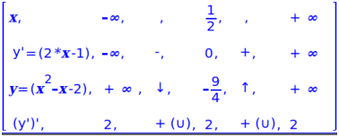
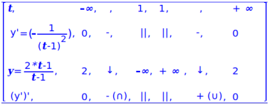

5.18.2 Table of variations of a function:
tabvar
The tabvar command takes one mandatory argument and one
optional argument. The mandatory argument is an expression of a
single variable, and the second argument is the variable.
tabvar returns the table of variations of the function
f(x) = expr and draws the graph on the
DispG screen, accessible with the menu
Cfg▸Show▸DispG.
Input:
tabvar(x^2 - x - 2,x)
Output:

-
The first row, the x row, gives the endpoint of
subintervals of the domain. In this case, the subintervals go from
−∞ to 1/2 and from 1/2 to ∞.
- The second row, the y’ row, gives the values of the
derivative at the values in the first row (or limits, in the case of
±∞), and between them the sign (+ or −) of the
derivative in the corresponding subinterval.
- The third row, the y row, gives the values of the
function at the values in the first row, and between them whether
the function is increasing or decreasing in the corresponding
subinterval.
- The fourth row, the y’’
row, gives the values of the second derivative at the values in the
first row, and between them whether the graph is concave up or
concave down in the subinterval.
Input:
tabvar((2*t-1)/(t-1),t)
Output:

Note that in this case, the value 1 appears twice in the first row, so
that both one-sided limits of y can be displayed at the
vertical asymptote t=1. The values of 2 for y at −∞
and ∞ indicate a horizontal asymptote of y=2.